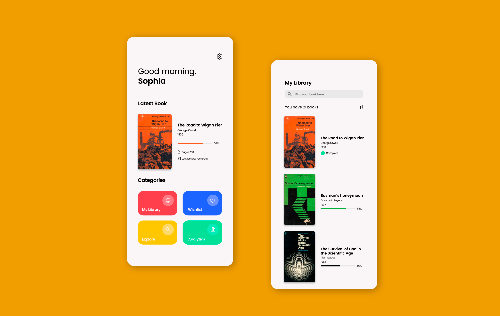

Vivlio
A minimalist digital bookshelf

Client
Self-Project
Role
Design and Development
Platforms
Android, Website
A time-tracking tool, so you can better organize your objectives.
Free and OpenSource.
Vivlio is a minimalist digital bookshelf designed to help you organize your
books by category, author and genre.
Vivlio can be used as a daily essential
for people of all ages who love to read or even for those who hate to read.